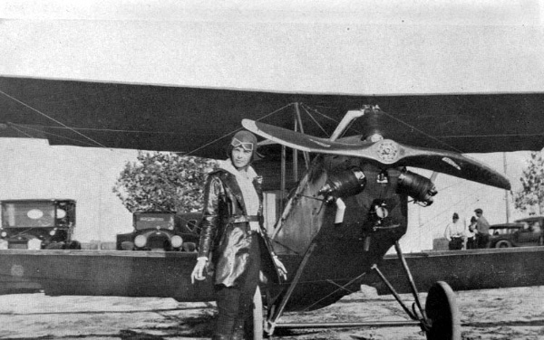

Amelia Earhart
Aviator

"The most difficult thing is the decision to act, the rest is merely tenacity. Fears are paper tigers. You can do anything you decide to do. You can act to change and control your life; and the procedure, the process is its own reward."
- Amelia Earhart
Amelia Mary Earhart was an aviation pioneer who became the first woman to fly solo across the Atlantic. She set many solo flying records and wrote several successful books about her experiences. She was a supporter of equal rights for women and saw her role to inspire other women and give them confidence that they could achieve the same as men. In 1937, aged just 40 years old, Amelia Earhart disappeared over the Pacific Ocean on a solo flight attempting to circumnavigate the globe.
Achievements of Amelia Earhart:
- First female to fly solo from Hawaii to California. January 11, 1935
- First female to fly solo across Atlantic May 21, 1932
- Inspired a generation of female pilots to take up a domain primarily the reserve of men
- Women’s Airforce Service Pilots who helped in World War II
- Woman’s world altitude record: 14,000 ft (1922)
- First woman to fly the Atlantic (1928)
- Speed records for 100 km (1931)
- First woman to fly an autogyro (1931)
- Altitude record for autogyros: 15,000 ft (1931)
- First person to cross the U.S. in an autogyro (1932)
- First woman to fly the Atlantic solo (1932)
- First person to fly the Atlantic twice (1932)
- First woman to receive the Distinguished Flying Cross (1932)
- First woman to fly non-stop, coast-to-coast across the U.S. (1933)
- Woman’s speed transcontinental record (1933)
- First person to fly solo between Honolulu, Hawaii and Oakland, California (1935)
- First person to fly solo from Los Angeles, California to Mexico City, Mexico (1935)
- First person to fly solo nonstop from Mexico City, Mexico to Newark, New Jersey (1935) Speed record for east-to-west flight from Oakland, California to Honolulu, Hawaii (1937)
- President Herbert Hoover presented Earhart with a gold medal from the National Geographic Society
- Congress awarded her the Distinguished Flying Cross-the first ever given to a woman